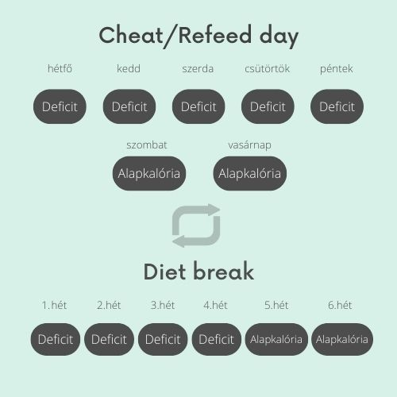

A diéta legnehezebb kihívása az éhség legyőzése. Emiatt buknak bele vagy adják fel legtöbben a fogyás céljaikat. Ha azonban megfelelő ételeket, módszereket, időzítést alkalmazol, akkor úgy tudod csökkenteni az éhségérzeted, hogy közben a kalóriáid nem emelkednek.
A zöldségek az elsőszámú segítőid az éhségérzet csökkentéséhez, mert alacsony kalóriasűrűségük miatt nagy adagokat ehetsz meg belőlük anélkül, hogy a kalóriáid megugranának. Az sem mellékes, hogy így rengeteg vitaminhoz és ásványianyag jutsz hozzá, amikhez általában nem.
A zöld zöldségek (saláta, rukkola, spenót, spárga, uborka, cukkini) kifejezetten magas ásványianyag tartalommal rendelkeznek és alacsony kalóriatartalommal, de a többi zöldség (répa, paradicsom, paprika stb.) is hasonlóan jó tulajdonsággal rendelkezik.
Vigyázz a saláta öntetekkel, mert a legtöbb sok kalóriát tartalmaz, ami tönkre teheti a diétád és a deficited. Válassz alacsony kalóriás önteteket, natúr joghurtot, só, bors, szárított fűszerek: légy kreatív, találd meg a neked megfelelőt saját ízlésed szerint.
Hasonló a helyzet a gyümölcsöknél is, alacsony kalóriatartalmuk miatt többet ehetsz belőlük (térfogatban), ami telítettség érzetet okoz.
A legalacsonyabb szénhidráttartalmú gyümölcsök az eper, görögdinnye, málna, szeder.
Alapvetően az összes gyümölcsöt nyugodtan fogyaszthatod diéta közben is viszont az adagokra jobb, ha figyelsz mert néhány gyümölcsnek különösen magas a szénhidráttartalma pl.: banán, szőlő, alma.
A bögrés levesek, egy meleg tea és hasonlók nagyon jólesőek melegségük miatt az éhes gyomornak, telítettségérzetet okoznak és segítenek átvészelni a következő étkezésig.
A jól eső érzésen túl a kávénak, zöld teának, menta teának éhségcsökkentő hatása is van.
Diéta alatt az éhség leküzdéséhez sokban hozzájárulhatnak a 0 kalóriás üdítők, öntetek egyebek, mivel sokszor az ízek egyhangúsága az, ami a sóvárgást okozza. Ilyenkor megtudod törni a monotonitást egy gyümölcsös itallal vagy például egy zéró kalóriás csokiöntettel. Ezek cserélgetésével változatosságot tudsz vinni a fogyókúrádba.
A csaló napot nagyon sokféleképpen lehet értelmezni. Részemről úgy gondolom, hogyha eredményesen akarsz fogyni a következőket muszáj betartanod velük kapcsolatban:
A hosszú távú eredményhez hozzájárulhatnak, mert ezeken a napokon mentálisan feltudsz lélegezni, ami ilyenkor nagyon fontos. Viszont, ha akkora kalóriatöbbletet eszel meg ekkor, ami kiegyenlíti az egész heti kalóriahiányt akkor nem fogsz fogyni.
Annyiban tér el a cheat day módszertől, hogy a ciklusok nem hetente, hanem havonta váltakoznak. Tehát 3-4 hét kalóriadeficites („diétás”) táplálkozás után 1-2 hét alapkalória szinten történő táplálkozás következik.
Így még több időd van a mentális resetre. Ebben az időszakban is követned kell a bevitt kalóriákat különben nagy eséllyel túl eszel és eredménytelen lesz a diétád.
Milyen időközönként egyél? gyakran keveset vagy inkább ritkábban nagyobb adagot? A legtöbb esetben a kb. 3-4 óránkénti gyakoribb, mérsékelt mennyiségű étkezés a legjobb választás.
Így elkerülhető a vércukorszint túlzott ingadozása, tehát napközben nem törnek majd rád azok az erős éhségrohamok. Ráadásul, ha túl hosszú időt hagysz ki étkezések között akkor fennáll annak a veszélye, hogy „felgyülemlik” az éhség, aminek túlevés a vége.
Már tudod, hogy mikor érdemes enned, ha csökkenteni akarod az éhséged, már csak az a kérdés, hogy mit? Vagy inkább, hogy mikor és mit? (a zöldségeken és gyümölcsökön kívül persze)
Elengedhetetlen, hogy elegendő fehérjét és zsírt vigyünk be mert a túlzott szénhidrát fogyasztás az egyik fő oka a gyakori éhségérzetnek. Viszont nem kell a szénhidrátra ellenségként tekinteni, fontos makrotápanyag, amire szüksége van szervezetünknek, de az arányokra figyelj (diéta kalkulátor)! A szénhidrát forrása teljes értékű tápanyag legyen, kerüld a finomított, túl feldolgozott szénhidrátokat. Alacsony glikémiás indexű ételeket és szénhidrátokat válassz.
Reggeli és ebéd makróidat nagyjából 30-50-20 arányban oszd el a fehérje-szénhidrát-zsír tekintetében.
Edzés vagy bármilyen fizikai aktivitás előtt 1-1,5 órával a szénhidrát jobb, ha magasabb arányban van a tányérodon a könnyebb emészthetőség és megfelelő energia biztosítás miatt. Emellett gyümölcs fogyasztása is plusz energiát adhat fruktóz formájában.
Estére pedig a szénhidrát arányát érdemes csökkenteni, ilyenkor már kevesebb energiát használunk fel, a zsír és fehérje együtt pedig lassabban felszívódva folyamatosan "táplál" és alacsonyan tartja éhségszintünket.
Az alvás jelentősen befolyásolja az éhségérzetet és azt is, hogy milyen ételeket kívánunk meg ezért is kulcsfontosságú, hogy megfelelően tudj pihenni. Az alvás fontosságáról és tippeket a jobb alváshoz előző postomban olvashatsz.
Te mikor szoktál éhes lenni napközben? Szoktál reggelizni vagy olyankor rá se tudsz nézni az ételre? Este nassolsz inkább? Alig bírod kivárni az ebédidőt? Mindenki más ezért nagyon fontos, hogy a saját igényeid alapján szabd személyre és alkalmazd az itt írtakat.
Csodamódszer nincs. Amikor diétázol lesznek napok, hogy könnyebb és napok mikor nehezebb majd sínen maradni. Tehát kitartásra és fegyelemre kétségkívül szükség lesz tőled, azonban ezek a módszerek sokat segíthetnek, hogy egyszerűbb és elviselhető legyen a folyamat.
4-tipp-kezdőknek-az-edzéstervhez-és-rendszeres-edzéshez.jpg)